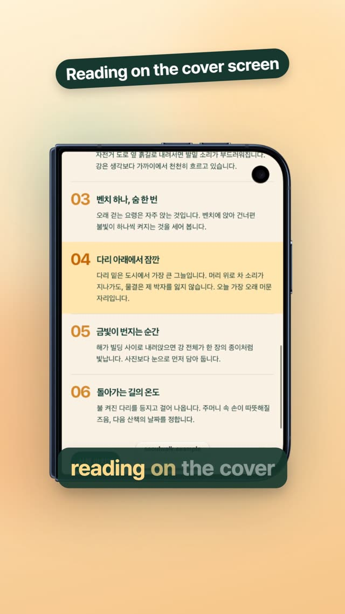
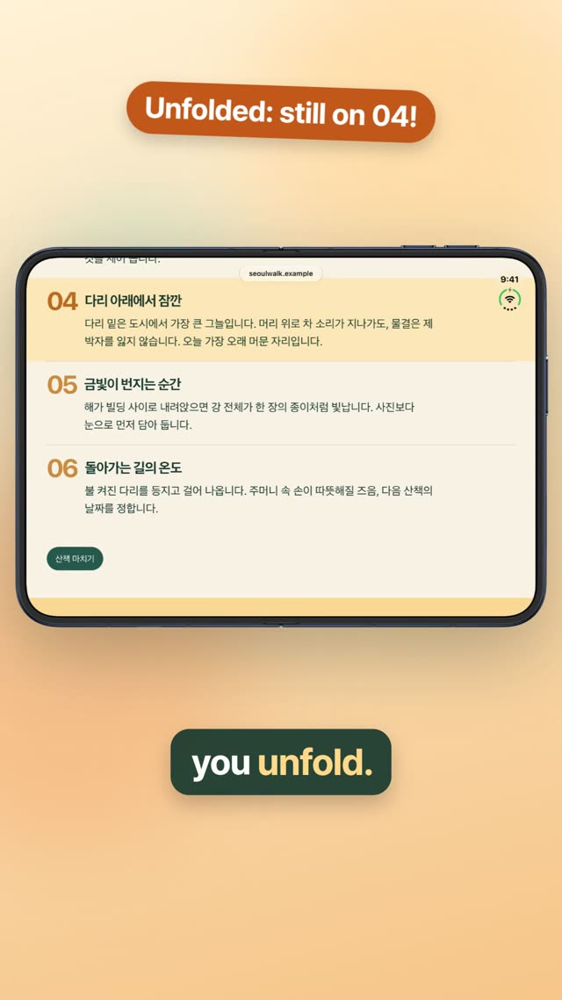

Unfold your iPhone Duo and keep reading the same paragraph
You are reading a long article on the cover screen, you unfold for more room, and now you have to find your place again. Full Screen Browser keeps it for you.
Get Full Screen Browser on the App Store
How it works
1. Read on the cover screen
Scroll through an article with the phone folded.

2. Unfold
Open the phone and the same tab continues on the larger display, with the paragraph you were on still in view.

3. Fold it back
Close the phone again and you are still on the same paragraph.
Get Full Screen Browser on the App Store
Screens were recorded from the real app running in a simulator. The finger markers show where the screen was touched.